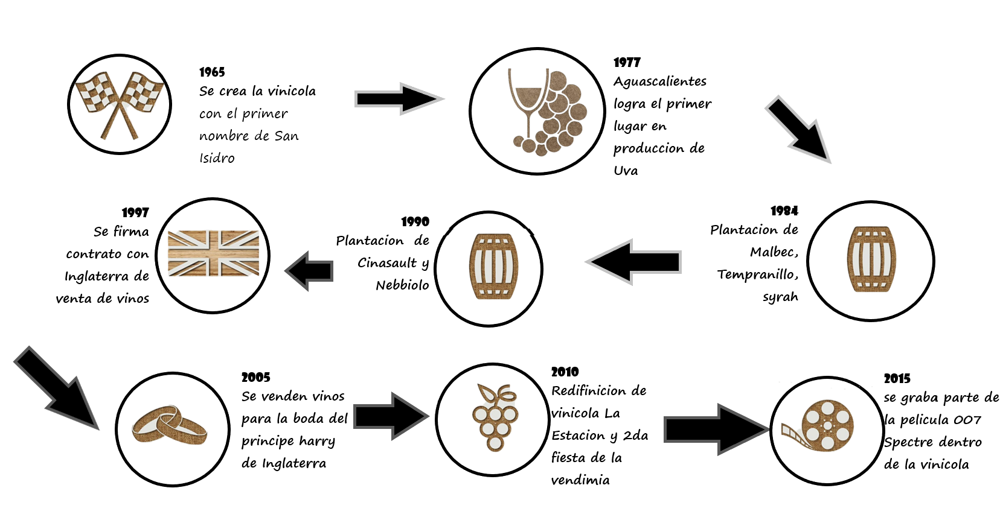

Vinicola LA ESTACION es un proyecto que reúne a un grupo de personas de altos estándares, determinados a transmitir sensaciones y experiencias que surgen del suelo, el viento y el agua. Este grupo tiene un objetivo común: revivir la tradición vitivinícola del altiplano central Mexicano.
Somos una empresa que se dedica a la produccion de los mejores vinos y licores de Mexico e incluso somos reconoidos internacionalmente por paises como:
Somos un empresa que se remota desde el siglo anterior, para ser mas exacto en el año de 1965 fue craeda por una autentico profesional en este ámbito, "AURELIO GARCÍA" que sin duda tiene un gran don de percibir el sabor de un gran vino, whisky o licor en general. Como herederos de una tradición de decenas de años, estamos comprometidos no solo mantenerla sino a renovarla con un enfoque a la excelencia. Para asegurar la calidad de nuestros vinos trabajamos con selectas producciones de uva conducidas por gravedad, así como maceraciones largas.. Buscamos continuamente la mejora a través de tecnología, sabemos que el reto es grande por lo cual nos reinventamos con cada amanecer, somos evolución constante.
